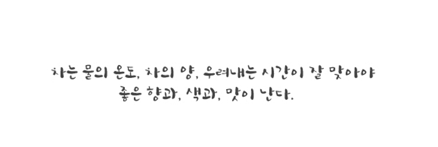

home > 녹차정보 > 차 우리는 법
| 01 | 물은 센 불에서 급히 끓이는 것보다 화로불 같은 은근한 불에서 섭씨 100℃까지 끓인다. |
| 02 | 100℃의 끓는 물(탕수)을 물식힘그릇(숙우)에 따르면 80~85℃가된다. 숙우의 물을 차를 우려내는 다관에 따르면 탕수의 온도는60~65℃로 온도가 내려간다. |
| 03 | 물이 뜨거우면 차입에 포함된 쓰고 떫은 맛이 많이 우러나오고 차의 맛을 좌우하는 아미노산과 질소화합물은 덜 우러나기 때문에 차 맛이 떨어진다. |
| 04 | 차의 양은 1인분 2g 정도이고 물의 양은 50cc이며 사람의 수가 많아지면 차의 양은 감소해야 한다. 5인인 경우 물의 양은 250cc,차는 8g 정도가 적당하며 차양은 잔의 7~8부 정도가 좋다. |
| 05 | 차를 우리는 시간은 1분~ 1분 30초 정도가 적당하다. |
| 06 | 잔에 따를 때 세 번 반복하여 나누어 따르는 것이 좋다. |
| 01 | 가루차를 내는 과정을 점다 라고 한다. 가루차는 가루를 섞어 찻솔(차선)로 찻물이 녹색의 크림같이 될 때까지 젓는다. |
| 02 | 물의 온도는 80~90℃가 가장 좋다. |
| 03 | 차의 양은 1인분 2g이 적당하며 물의 양은 50cc일 때 가장 아름답고 맛 좋은 다유 (녹색 크림 같은 것)를 얻는다. |
| 04 | 맛이 온화하고 향은 그윽하며 색은 아름다운 연두색이다. |
| 05 | 찻사발을 예열시키고 물기를 닦아낸 다음 가루가 날지 않게 조심스레 차통에서 옮기고 탕수를 붓는다. |
| 06 | 차솔을 잡은 손은 무겁게(힘차게), 차솔은 가볍게 솔바람 소리가 일어나도록 앞, 뒤로 젓는데 다완 밑바닥에 닿을 듯 말 듯 힘차게 저어야 아름다운 비취색의 유화가 생긴다. |
| 07 | 가루차는 거품이 삭아서 푸른 물이 생기면 맛이 떨어진다. |
| 08 | 음미할 때는 끝까지 부드러운 크림이 흘러내리듯 찻사발에 남아야 잔잔한 구름같고 맛 좋은 다유라고 할 수 있다. |
| 09 | 가루차는 가루가 무척이나 부드럽고 고운 것이므로 습기가 침투되어 가루가 뭉처져 잘 풀리지 않을 때도 있으니 보관에 유의해야 한다. |
녹차와 좀더 친해지고 더 맛있게 마실 수 있는 법은 여러 가지가 있지만 보관방법이 차지하는 비중 또한 무시할 수 없다고 할 수 있다. 그것은 녹차의 성질중 특이한 것 중 하나가 냄새의 흡착능력인데 아주 대단하기 때문에 매우 중요하다. 특히나 많이들 범하는 오류중 하나인 개봉후 냉장고에 보관하는 문제는 큰 잘못이다. 냉장고에 있는 냄새를 빨아들여 녹차의 맛에 치명적인 영향을 주기 때문이다. 개봉 전에도 가능한 냉장고에는 보관하지 말고 시원하고 햇볕이 들지 않는 곳에 보관하는 것이 좋다.